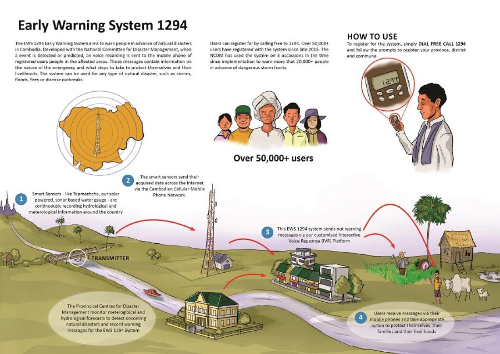

Cambodia is a country consistently ranked as one of the most vulnerable to the effects of natural disasters.
In order to deliver timely and potentially lifesaving information to people in disaster prone areas, an Early Warning System (EWS) was conceived by the organization, People In Need (PIN).
People in Need realized that the EWS needs to be accessible to all Cambodians, regardless of literacy and Internet connectivity issues. They decided to look into a solution which uses voice based messaging for alerts and Interactive Voice Response (IVR) for registration.
With help from the Royal Cambodian Government, the Telecommunication Regulator of Cambodia (TRC) and the National Committee for Disaster Management (NCDM), it was regulated that the Early Warning System must be provided free of charge by the Mobile Network Operators (MNOs) in Cambodia.
With the pieces of the puzzle coming together the problems that still remained were:
The major mobile network operators in Cambodia each provided a SIP connection, but lacked the technology that People In Need required to handle user registrations and send out automated flood alerts.
Somleng Simple Call Flow Manager (Somleng SCFM) is an open source contact center platform and call flow manager designed for Somleng and Twilio. Somleng SCFM comes complete with it's own REST API for managing contacts, callouts and phone calls and can be configured to send out alerts and listen for inbound calls through Somleng's Twilreapi, an open source implementation of Twilio's REST API.
Unlike Twilio's REST API however, Somleng's Twilreapi gives you full control over where and how inbound and outbound calls are routed to. As such Twilreapi was configured to send out alerts and listen for outbound calls via a SIP connections provided by the telcos.
Putting it all together, flood sensors which detect water level heights are connected to Somleng SCFM, which then triggers automated callouts to the people in the affected areas in the form of a voice message alert.
Since the beginning of the project Somleng has processed around 367 K minutes worth of registrations and 94.7 minutes worth of alerts.
In Somalia returnee households from Dadaab refugee camp in Kenya and vulnerable households in Bay and Bakool received emergency unconditional cash-based transfer assistance package to help them meet their needs during the current drought period.
In order to share information and get feedback about the program, a voice-based messaging solution was proposed. In the proposal voice messages and surveys would be recorded in the Somali language and delivered to the household head by mobile phone calls.
The price for terminating a call through Twilio in Somalia is $0.7680 per minute. To date more than 75.8 K minutes worth of calls have been sent out which would equate to $58,238.98 on Twilio.
In order to reduce costs and promote local businesses, Africa's Voices Foundation in conjunction with UNICEF Somalia partnered with Hormuud, a local MNO in Somalia. In comparison, Hormuud's pricing is between $0.04 and $0.07 per minute.
Somleng SCFM was again used in this project to provide Africa's Voices Foundation a dashboard for scheduling callouts and managing receipients. Automated voice messages were sent to benificiaries via Somleng's Twilreapi and a SIP connection to Hormuud.